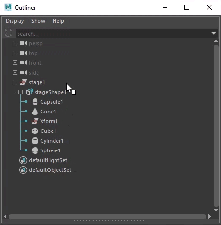
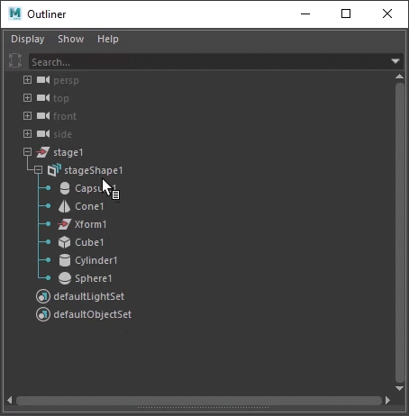
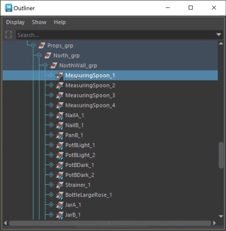
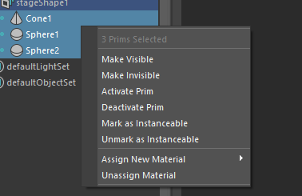

Right-click a node in the Outliner to access USD-specific options in a contextual menu. The content of the menu depends on the type of node you click: the stage transform node, the stage node (proxy shape), or a prim.
If you select prim in the Outliner, the USD Layer Editor will auto-focus to the stage of your selection, so long as there is no pinned stage. See Work with the USD Layer Editor for more information on pinning your stage.
The contextual menu that is displayed corresponds to the node you right-click. If a node is selected and you right-click a different node, the contextual menu appears for the node you right-clicked, and your selection is ignored.

Right-click a USD stage transform node or anywhere in the Outliner to display the following USD-specific option:

Right-click a USD stageShape in the Outliner to display the following USD proxyShape-specific options:

Right-click a USD prim in the Outliner to display the following options:
USD Layer Editor: Opens the USD Layer Editor window.
Edit as Maya Data: Seamlessly convert your USD data into Maya data and work with it (pull). Once complete, you can seamlessly transition the data back again into USD data, amplifying your workflow capabilities. Note: there is no data loss within this process. See Work with USD Data as Maya Data to learn more about this process.
Duplicate as Maya Data: Copies the selected USD prim and creates a new node in Maya for the data, similar to the import process (ie. imports USD data as Maya data). See Work with USD Data as Maya Data to learn more about this process.
Load/ Unload: If applicable, such as for payload references, unloads or loads the selected prim/prims from the scene depending on its current state.
Variant Sets: If applicable, lists the variant sets and variants available for the selected prim, letting you switch variants. Tip: Hold Ctrl during variant selection to keep the variant set and variant submenus open.
Edit as Maya Data: If applicable, enables you to edit the prim as Maya data and then cache your edits back to USD. Note: only the edits of the pulled object are brought back to USD, minimizing data translation. This option only appears if a primType has import and export translators. Studios using custom schema translators can also manually enable this option for their prims.
Make Invisible/Make Visible: Toggles the visibility of the selected prim in the viewport. This option is renamed to Make Visible once a prim is hidden from the viewport. If a prim is made invisible, its descendants are also made invisible. When invisible, the prim is greyed out in the outliner, but its descendants are not.
Set as Default Prim/ Clear Default Prim: If applicable (this is only available for your root prim), choose this to set your prim as the default prim. As part of its metadata, each stage can identify a default prim. This is the primitive that is referenced in if you reference in a file. Right-click a root prim in a stage to set it as your default prim. Use the same method to clear a default prim once it has been set.
Deactivate Prim/Activate Prim: Toggles if a prim is enabled or disabled from a scene. Deactivate or delete a prim to disable it from a scene. This option is renamed to Activate Prim once a prim is deactivated/ made inactive. Inactive prims are denoted in the Outliner with a greyed out strikethrough and are disabled from the Viewport.Note: You can toggle the visibility of inactive prims in the Outliner by selecting Display > Inactive Prims.
Mark as Instanceable/Unmark as Instanceable: When toggled, the metadata on the prim is authored to be instanceable = true or false. Using this menu item, you can instance and de-instance prims. When you mark a prim as instanceable, instanceable = true. When you unmark a prim as instanceable, instanceable = false.
Add New Prim: A prim is a container object in USD. You can add the following prim types as children of a prim: Def, Scope, Xform, Capsule, Cone, Cube, Cylinder, Sphere, Maya Reference. If you are an advanced user, you can script to register custom prims and select from the All Registered category in this menu to access the concrete prim types you have registered with your USD plug-in. This category is organized by geometry inheritance schema classes.
Related Concepts: For more information on USD Geometry schema, see Pixar's API Documentation. For more information on USD prim types, see Prim Type Index.
Add USD Reference/ Payload...: Opens a file browser to select a reference file for the selected prim.
References are a common composition arc in USD. References let you reuse scene description. For example, you can load the same layer file multiple times into a single scene in different locations. This lets you load scene description (ie. a model, asset) from an external layer without copying it into the contents of the referencing layer. For more information, see Work with USD data in the Outliner.
Related Concepts: For more information, see references in the Pixar USD Glossary.
Clear All USD References/Payloads...: Brings up the Clear all references/payloads dialog, enabling you to select to clear payloads only or references from authored on edit targets. Once you choose which payloads/references to remove, they are cleared from the viewport.
You can toggle the visibility, activate/deactivate, mark instanceable to yes/no, assign new materials, unassign materials, or assign existing materials to multiple prims in the Outliner. Select the prims in the Outliner you want to work with and then right-click to find contextual menu options for your selected prims. Run USD actions in bulk on the number of prims you have selected.
